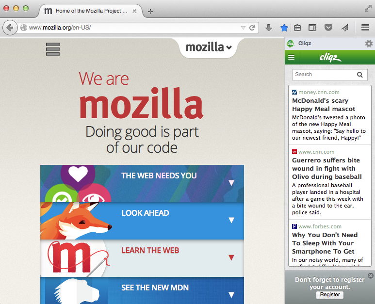

Congratulations, You've just added new functionality to Firefox!
Services on this site help you to keep up with friends, see the stories people are talking about and more. Keep on reading to find out more about how these features work.
These services support one or more of the following features.
Share content you like

With the click of a button, you can Share interesting content on any website with the rest of the world, using the services you like.
Just click on the share button and choose the service you want to use.
Save content for later

With the click of a button, you can save interesting content on any website to the cloud with services like Pocket and Delicious.
Keep an eye on news, trending music and more
With the click of a button, you can Share interesting content on any website with the rest of the world, using the services you like.
Just click on the share button and choose the service you want to use.
Managing your services
All of the toolbar buttons are customizable (some only in upcomming versions of Firefox) using the new Customizability of Firefox. Add, move or remove buttons to make Firefox exactly the way you want it.
You can easily change the service in your sidebar, or hide the sidebar, from the sidebar itself. You can also use the View->Toolbars menu in Firefox.
![[share button image]](../images/sidebarbutton.png)
Starting with Firefox 30, You can also manage your sidebars using the sidebar toolbarbutton. You can find the sidebar toolbar button in the customization palette.
You can easily manage your services, disabling them temporarily or removing them, by viewing the Add-ons Manager in Firefox.